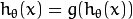
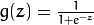
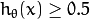
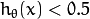
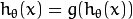
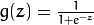
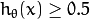
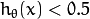

ML implements logistic regression, which is a probabilistic classification technique. Logistic Regression is a binary classification algorithm which is closely related to Support Vector Machines (SVM). Like SVM, Logistic Regression can be extended to work on multi-class classification problems like digit recognition (i.e. recognizing digitis like 0,1 2, 3,... from the given images). This version of Logistic Regression supports both binary and multi-class classifications (for multi-class it creates a multiple 2-class classifiers). In order to train the logistic regression classifier, Batch Gradient Descent and Mini-Batch Gradient Descent algorithms are used (see [BatchDesWiki]). Logistic Regression is a discriminative classifier (see [LogRegTomMitch] for more details). Logistic Regression is implemented as a C++ class in LogisticRegression.
In Logistic Regression, we try to optimize the training paramater
 such that the hypothesis
such that the hypothesis
 is acheived.
We have

and

as the logistic or sigmoid function.
The term “Logistic” in Logistic Regression refers to this function.
For given data of a binary classification problem of classes 0 and 1,
one can determine that the given data instance belongs to class 1 if

or class 0 if

.
is acheived.
We have

and

as the logistic or sigmoid function.
The term “Logistic” in Logistic Regression refers to this function.
For given data of a binary classification problem of classes 0 and 1,
one can determine that the given data instance belongs to class 1 if

or class 0 if

.
In Logistic Regression, choosing the right parameters is of utmost importance for reducing the training error and ensuring high training accuracy. LogisticRegression::Params is the structure that defines parameters that are required to train a Logistic Regression classifier. The learning rate is determined by LogisticRegression::Params.alpha. It determines how faster we approach the solution. It is a positive real number. Optimization algorithms like Batch Gradient Descent and Mini-Batch Gradient Descent are supported in LogisticRegression. It is important that we mention the number of iterations these optimization algorithms have to run. The number of iterations are mentioned by LogisticRegression::Params.num_iters. The number of iterations can be thought as number of steps taken and learning rate specifies if it is a long step or a short step. These two parameters define how fast we arrive at a possible solution. In order to compensate for overfitting regularization is performed, which can be enabled by setting LogisticRegression::Params.regularized to a positive integer (greater than zero). One can specify what kind of regularization has to be performed by setting LogisticRegression::Params.norm to LogisticRegression::REG_L1 or LogisticRegression::REG_L2 values. LogisticRegression provides a choice of 2 training methods with Batch Gradient Descent or the Mini-Batch Gradient Descent. To specify this, set LogisticRegression::Params.train_method to either LogisticRegression::BATCH or LogisticRegression::MINI_BATCH. If LogisticRegression::Params is set to LogisticRegression::MINI_BATCH, the size of the mini batch has to be to a postive integer using LogisticRegression::Params.mini_batch_size.
A sample set of training parameters for the Logistic Regression classifier can be initialized as follows:
LogisticRegression::Params params;
params.alpha = 0.5;
params.num_iters = 10000;
params.norm = LogisticRegression::REG_L2;
params.regularized = 1;
params.train_method = LogisticRegression::MINI_BATCH;
params.mini_batch_size = 10;
References:
| [LogRegWiki] | http://en.wikipedia.org/wiki/Logistic_regression. Wikipedia article about the Logistic Regression algorithm. |
| [RenMalik2003] | Learning a Classification Model for Segmentation. Proc. CVPR, Nice, France (2003). |
| [LogRegTomMitch] | http://www.cs.cmu.edu/~tom/NewChapters.html. “Generative and Discriminative Classifiers: Naive Bayes and Logistic Regression” in Machine Learning, Tom Mitchell. |
| [BatchDesWiki] | http://en.wikipedia.org/wiki/Gradient_descent_optimization. Wikipedia article about Gradient Descent based optimization. |
Parameters of the Logistic Regression training algorithm. You can initialize the structure using a constructor or declaring the variable and initializing the the individual parameters.
The training parameters for Logistic Regression:
The learning rate of the optimization algorithm. The higher the value, faster the rate and vice versa. If the value is too high, the learning algorithm may overshoot the optimal parameters and result in lower training accuracy. If the value is too low, the learning algorithm converges towards the optimal parameters very slowly. The value must a be a positive real number. You can experiment with different values with small increments as in 0.0001, 0.0003, 0.001, 0.003, 0.01, 0.03, 0.1, 0.3, ... and select the learning rate with less training error.
The number of iterations required for the learing algorithm (Gradient Descent or Mini Batch Gradient Descent). It has to be a positive integer. You can try different number of iterations like in 100, 1000, 2000, 3000, 5000, 10000, .. so on.
The type of normalization applied. It takes value LogisticRegression::L1 or LogisticRegression::L2.
It should be set to postive integer (greater than zero) in order to enable regularization.
The kind of training method used to train the classifier. It should be set to either LogisticRegression::BATCH or LogisticRegression::MINI_BATCH.
If the training method is set to LogisticRegression::MINI_BATCH, it has to be set to positive integer. It can range from 1 to number of training samples.
Sets termination criteria for training algorithm.
The constructors
| Parameters: |
|
|---|
By initializing this structure, one can set all the parameters required for Logistic Regression classifier.
Implements Logistic Regression classifier.
Creates empty model.
| Parameters: |
|
|---|
Creates Logistic Regression model with parameters given.
Trains the Logistic Regression classifier and returns true if successful.
| Parameters: |
|
|---|
Predicts responses for input samples and returns a float type.
| Parameters: |
|
|---|
This function returns the trained paramters arranged across rows. For a two class classifcation problem, it returns a row matrix.
It returns learnt paramters of the Logistic Regression as a matrix of type CV_32F.